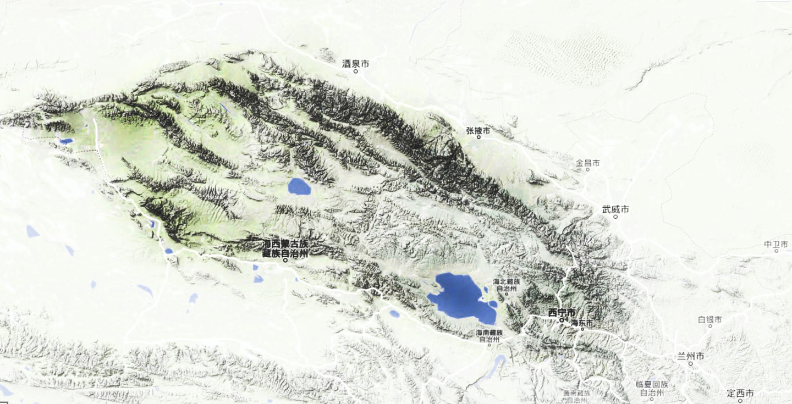

祁连山，原指河西走廊南部山地最北的一支山岭（走廊南山西端，海拔5547米），或称狭义的“祁连山”。“祁连”系匈奴语，匈奴呼天为“祁连”，祁连山即“天山”之意。因位于河西走廊之南，历史上亦曾叫南山，还有雪山、白山等名称。西汉初年，霍去病西征并征服匈奴，“失我祁连山，使我六畜不蕃息；失我焉支山，使我嫁妇无颜色。”匈奴民歌所指“祁连山”即此。后泛指甘肃、青海之间一系列在地质或地貌上相联系的一系列山脉。
祁连山脉，位于中国青海省东北部与甘肃省西部边境，是中国境内主要山脉之一。由多条西北-东南走向的平行山脉和宽谷组成。东西长800公里，南北宽200－400公里，海拔4000－6000米，共有冰川3306条，面积约2062平方公里。
西端在当金山口与阿尔金山脉相接。东端至黄河谷地，与秦岭、六盘山相连。长近1000千米。属褶皱断块山。最宽处在酒泉市与柴达木盆地之间，达300千米。
山脉自西北至东南走向，包括大雪山、托来山、托来南山、野马南山、疏勒南山、党河南山、土尔根达坂山、柴达木山和宗务隆山。山峰多海拔4000－5500米，最高峰疏勒南山的团结峰海拔5808米。海拔4000米以上的山峰终年积雪，山间谷地也在海拔3000－3500米之间。
祁连山区，除山北的走廊地区及河湟谷地以汉族为主外，其它地区皆以藏、哈萨克、蒙古、裕固等牧业民族为主。

首次为《祁连山系》作品项目赴西北地区游历。
路线：由兰州市西北方向进入祁连山地区：连城镇、吐鲁沟（永登县），延大通河经往互助土族自治县－岗什卡雪峰（门源县）－卓尔山（祁连县）。由于当地海拨达4000米以上，本人出现了严重的高原反映，只得放弃前行计划，由扁都口进入河西走廊。
经过几周之后的身体调整，再次由祁连山西部的当令山口进入海北藏族自冶州地区：克鲁克湖、托素湖、可可盐湖，青海湖、倒淌河等地，8月中旬翻越日月山至西宁市。